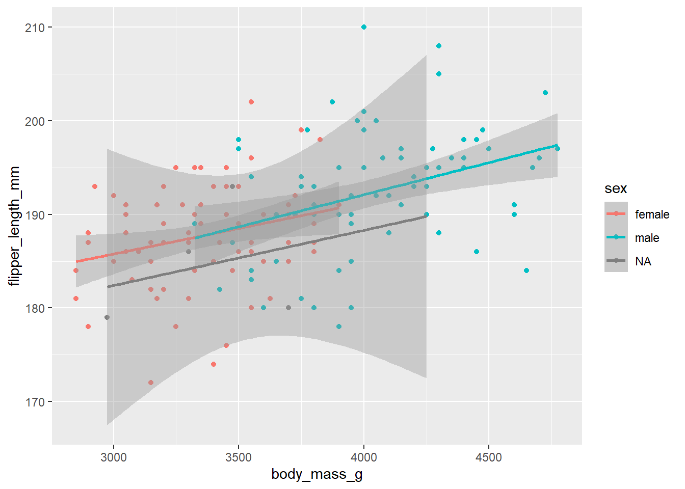

Code
#install.packages("palmerpenguins")
#install.packages("dplyr")
#install.packages("ggplot2")
library(palmerpenguins)
library(dplyr)
library(ggplot2)
df <- palmerpenguins::penguins#install.packages("palmerpenguins")
#install.packages("dplyr")
#install.packages("ggplot2")
library(palmerpenguins)
library(dplyr)
library(ggplot2)
df <- palmerpenguins::penguinsdf %>%
group_by(species, sex) %>%
summarise(
across(
where(is.numeric),
\(x) mean(x, na.rm = TRUE)
),
.groups = "drop"
) %>%
knitr::kable()| species | sex | bill_length_mm | bill_depth_mm | flipper_length_mm | body_mass_g | year |
|---|---|---|---|---|---|---|
| Adelie | female | 37.25753 | 17.62192 | 187.7945 | 3368.836 | 2008.055 |
| Adelie | male | 40.39041 | 19.07260 | 192.4110 | 4043.493 | 2008.055 |
| Adelie | NA | 37.84000 | 18.32000 | 185.6000 | 3540.000 | 2007.000 |
| Chinstrap | female | 46.57353 | 17.58824 | 191.7353 | 3527.206 | 2007.971 |
| Chinstrap | male | 51.09412 | 19.25294 | 199.9118 | 3938.971 | 2007.971 |
| Gentoo | female | 45.56379 | 14.23793 | 212.7069 | 4679.741 | 2008.069 |
| Gentoo | male | 49.47377 | 15.71803 | 221.5410 | 5484.836 | 2008.066 |
| Gentoo | NA | 45.62500 | 14.55000 | 215.7500 | 4587.500 | 2008.400 |
We will also create new datasets that are broken up into species.
#{python} df.dropna(inplace=True)
adelie <- df %>%
subset(species == 'Adelie')
chinstrap <- df %>%
subset(species == 'Chinstrap')
gentoo <- df %>%
subset(species == 'Gentoo')This scatter plot displays the relationship between the bill length in millimeters (x-axis) and the body mass in grams (y-axis) of three penguin species: Adelie, Chinstrap, and Gentoo, differentiated by color.
The plot shows a clear positive correlation between bill length and body mass. As the bill length increases, body mass tends to increase.
Different penguin species are distinct in terms of their spread and relationships:
Overall, this plot indicates that each species has unique body characteristics, with consistent correlations between bill length and body mass.
df %>%
ggplot(aes(x = bill_length_mm, y = body_mass_g, color = species)) +
geom_point() +
geom_smooth(method = "lm")
This scatter plot visualizes the relationship between bill length in millimeters (x-axis) and flipper length in millimeters (y-axis) among three penguin species: Adelie, Chinstrap, and Gentoo, indicated by distinct colors.
It shows a positive correlation between bill length and flipper length, with clear separations among the three species:
Each species has a unique trend line, suggesting that flipper length and bill length are positively correlated, but with variations in slope and spread among species. This separation reinforces that each penguin species has distinct morphological characteristics.
df %>%
ggplot(aes(x = bill_length_mm, y = flipper_length_mm, color = species)) +
geom_point() +
geom_smooth(method = "lm")
This scatter plot illustrates the relationship between bill length (in millimeters) on the x-axis and bill depth (in millimeters) on the y-axis, for three penguin species: Adelie (red), Chinstrap (green), and Gentoo (blue). Each species is shown with its own color and trend line.
The graph reveals distinct trends among the species, suggesting variations in bill length and bill depth characteristics:
Overall, the plot suggests a clear relationship between bill length and depth for each species, with variations in range and slope indicating unique characteristics.
df %>%
ggplot(aes(x = bill_length_mm, y = bill_depth_mm, color = species)) +
geom_point() +
geom_smooth(method = "lm")This scatter plot explores the relationship between body mass (in grams) on the x-axis and flipper length (in millimeters) on the y-axis for Adelie penguins. The data points are color-coded by sex, with red for females and teal for males. Each category has a trend line and confidence interval.
The graph shows a positive correlation between body mass and flipper length, indicating that heavier penguins tend to have longer flippers.
The broader distribution of males suggests greater variability in body mass and flipper length, indicating a wider range of sizes among them. The overlapping confidence intervals highlight some degree of overlap between the sexes, reflecting shared characteristics within Adelie penguins.
adelie %>%
ggplot(aes(x = body_mass_g, y = flipper_length_mm, color = sex)) +
geom_point() +
geom_smooth(method = "lm")
This scatter plot explores the relationship between body mass (in grams) on the x-axis and flipper length (in millimeters) on the y-axis for Chinstrap penguins. The data points are color-coded by sex, with red for females and teal for males. Trend lines with confidence intervals are provided for each sex.
The graph suggests a positive correlation between body mass and flipper length, with differences between males and females:
Overall, males exhibit greater variability in body mass and flipper length, suggesting a broader range of sizes. The overlapping confidence intervals imply some similarities between males and females, though males generally show higher body mass and longer flippers.
chinstrap %>%
ggplot(aes(x = body_mass_g, y = flipper_length_mm, color = sex)) +
geom_point() +
geom_smooth(method = "lm")
This scatter plot shows the relationship between body mass (in grams) on the x-axis and flipper length (in millimeters) on the y-axis for Gentoo penguins, color-coded by sex: red for females and teal for males. Each sex has a trend line and confidence interval.
The graph indicates a positive correlation between body mass and flipper length, with distinct differences between males and females:
Overall, males tend to have higher body mass and longer flippers, while females cluster in the lower range. The broader distribution of males suggests a wider range of body mass and flipper length among them. The overlapping confidence intervals suggest that while the sexes have some similarities, the observed trend lines confirm distinct patterns of variation within the Gentoo penguin population.
gentoo %>%
ggplot(aes(x = body_mass_g, y = flipper_length_mm, color = sex)) +
geom_point() +
geom_smooth(method = "lm")The scatter plots of the different penguin species—Adelie, Chinstrap, and Gentoo—demonstrate varying relationships between key morphological features like bill length, body mass, flipper length, and bill depth. Here’s a summary of the similarities and differences among the species:
All species exhibit positive correlations between the measured characteristics, suggesting that longer bills generally correspond to heavier body mass or longer flipper length. This pattern is consistent across all scatter plots, indicating that certain physical traits are interrelated among penguins.
Overall, while there’s a common positive trend between physical traits, each species has unique characteristics, with Gentoo penguins generally being the heaviest and longest, while Adelie penguins tend to be shorter and lighter. Chinstrap penguins consistently occupy the middle ground, exhibiting a blend of traits from the other two species.
#import duckdb
#from palmerpenguins import penguins
#con = duckdb.connect('my-db.duckdb')
#df = penguins.load_penguins()
#con.execute('CREATE TABLE penguins AS SELECT * FROM df')
#con.close()#con <- DBI::dbConnect(
# duckdb::duckdb(),
# dbdir = "my-db.duckdb"
# )
#df <- dplyr::tbl(con, "penguins")